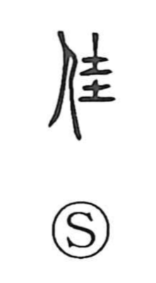

佳

Uncategorized
Kun: yoi | On: ka
good ・ beautiful ・ auspicious ・ excellent
Explanation
佳 is a phono-semantic character with 圭 as its phonetic, indicating the on reading ka (as in 卦), and drawing meaning from 圭 itself: a ceremonial jade, rounded above and square below, presented to feudal lords at their appointment and regarded as auspicious. Through this association with a felicitous jade, 佳 came to mean a good person and, by extension, simply good, beautiful, and auspicious. In compounds such as 佳人 it denotes a beauty and also a good friend.